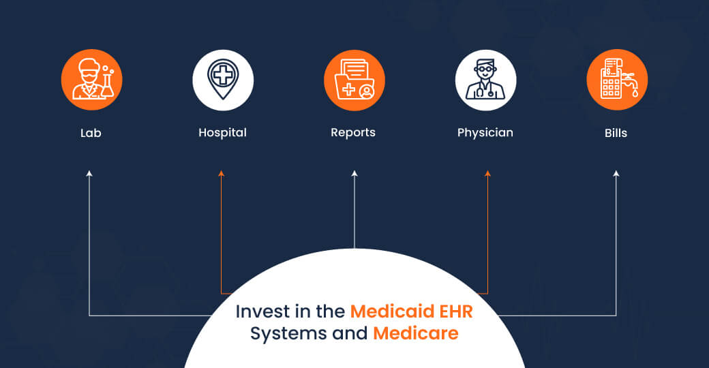
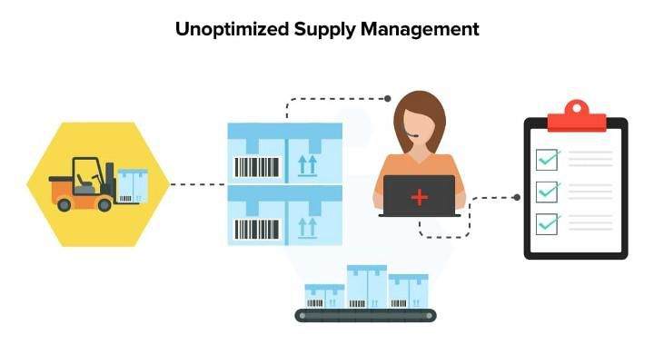
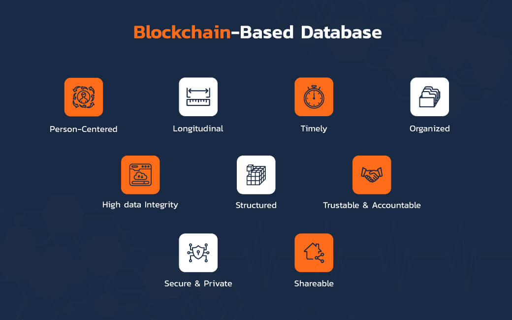

People are living longer lives and working longer hours. They can live healthy, independent lives well into old age due to advances in healthcare. It is the responsibility of healthcare providers to actively monitor the wellness of people, including those living in home health communities. For example, doctors must ensure that patients understand and follow prescription medication, exercise, diet, and other wellness factors.
As medical technology makes admirable advances, we also see the rise of technology to manage healthcare in the digital age. We see healthcare technology trends in the industry that are not only intended to make patients' lives easier but also to solve some major issues in the health tech industry.
Here are the seven most important problems confronting the healthcare industry around the world and an attempt to offer workable solutions to these problems.
How to Solve Healthcare Problems with Digital Technology ?
The healthcare industry deals with a number of problems every day. On the other hand, technology can assist you in staying ahead of the curve and help you stand out as one of the most technologically advanced healthcare providers.
Here are some of the seven primary healthcare problems that technology can help solve for a better and healthier world.
Problem 1: No remote access
For decades, in-person consultations have been associated with healthcare. This has been a problem that has compelled patients to rush to the nearest healthcare facility for treatment. The COVID outbreak and lockdowns made matters worse. The virus's contagious effect kept people confined within the four walls of their homes. So what do they do if they need to see a doctor urgently?
The need for remote access or virtual consultations is an urgent requirement that must be met in order to stay one step ahead of the technology adoption race.
Solution 1: Invest in mobile and web applications for healthcare
The flexibility and performance abilities of these remote-oriented platforms are being grown by mobile app developers. This creates a trustworthy environment for medical experts to provide quality care and advice to patients from miles away. Telemedicine aims to improve the quality of healthcare by using wearables and smartphones to track health. The use of technology in healthcare has accelerated the development of products that use technology such as holography, artificial intelligence, machine learning, and augmented and virtual reality.
Problem 2 : Existing Healthcare Siloes
The world's healthcare professionals are disconnected and appear to be working in silos. There is a missing platform that can bring the healthcare industry together to discuss their learning, share knowledge, and take notes. Things could improve if there was a single platform dedicated solely to the healthcare industry. Everyone can learn from everyone else, which leads to improved understanding, diagnosis, and treatment.
Solution 2: A Social Networking App for Healthcare Professionals
The problem can be solved by building a social networking app specifically for healthcare professionals. Something along the lines of what Net Solutions accomplished with "The OCR" (The On Call Room)—a mobile social platform for healthcare professionals.
- The healthcare industry has seen the most advancement and innovation.
- Ability to share photos, PDFs, PowerPoint presentations, Excel spreadsheets, and videos
- Healthcare professionals' ability to share patient data
The solution is viable and contributes to a healthier and better world by enabling collaboration and communication in the sector. Sharing knowledge can assist in the resolution of health issues while also promoting inclusivity.
Problem 3: Medicare and Medicaid Reimbursement Issues
Medicare and Medicaid are government healthcare programs that provide patients with healthcare coverage. Their repayment structures differ significantly and require a well-coordinated management process.
The procedures for filing and receiving Medicare and Medicaid are very different and add another task to healthcare professionals' to-do lists. The regulations also require them to maintain and record patient records in a specific format for the services provided.
Whenever a Medicare patient receives treatment, doctors must fill out the prescribed electronic forms as proof that the patient received the healthcare service. The rules and regulations have made it mandatory for healthcare professionals to follow the process in order to be paid, significantly increasing the workload.
Solution 3: Invest in the Medicaid EHR systems and Medicare

One of the most contentious political issues right now is healthcare reform. Electronic Health Record (EHR) systems are one of the healthcare technology trends that the industry is eager to adopt in order to simplify health record-keeping as well as Medicare and Medicaid filing.
EHRs provide an apolitical tool for controlling health-care spending, which is expected to grow at a 5.8% annual rate until 2022. EHR systems facilitate the use of appropriate electronic forms for government Medicaid and Medicare reimbursement. It is simple for healthcare professionals to keep patients' health records and fill out reimbursement forms after the service has been rendered.
Problem 4: Lack of Supply Management System

Traditional supply chain management is inefficient and wasteful on a regular basis. It results in money wasted on lost and damaged inventory, improper delivery of equipment or medication, and patient harm, all of which add up to massive financial losses for healthcare services. Supply shortages, misplaced inventory, and less-than-stellar shrinkage prevention measures all contribute to the fact that hospitals are epicenters for wasteful operations in the absence of a proper supply management system.
Solution 4: Take advantage of a data management system
To avoid heavy losses and unnecessary spending, it is critical to turn to digital healthcare technology providers for a powerful and effective solution. If you want to be at the top of supply chain management, invest in an inventory management system or a warehouse management system.
A strong data management system powered by data analytics not only is constantly updated and operates within an easy-to-use graphic user interface (GUI), but it also provides insightful and meaningful data. Administrative and medical professionals alike will benefit from having immediate access to accurate inventory numbers and current budget allocations.
Problem 5: Managing Massive Volumes of Patient Data
One of the most bewildering aspects of healthcare is patient-related data. The existing data pool grows with each new addition to the patient database. As a result, managing this data becomes even more difficult. It is only unrealistic to expect traditional infrastructure to manage and secure data.
The storage and retrieval of this patient data when it is required is a challenge that hospitals must address. Data overload and mismanagement frequently result in incorrect diagnoses, compromised data security, ineffective treatment, lapsed appointments, failure to keep up with changes in the progress or regression of the patient's condition, and so on. The consequences can be disastrous for both doctors and patients.
Solution 5: Cloud + Data Analytics Capabilities
The healthcare technology solutions to this problem are cloud-based data systems and mobile portals. These solutions provide healthcare professionals with real-time access to patient data such as registrations, medical histories, diagnoses, treatments, and appointments, among other things. Since the storage and retrieval are cloud-based, the records are updated in real-time and properly secured. Cloud-based solutions that aid in the maintenance of a patient database are also useful, as are data analytics capabilities.
Problem 6: Data Sharing Inefficiencies and Errors
Despite significant advances in medical science, inefficiencies and healthcare errors persist due to the healthcare industry's traditional management technology.
One particular source of concern is the transfer of patient data from one department or hospital to another. Traditional patient record sharing is time-consuming and inefficient, and it exposes patient information to a breach. In patients requiring urgent or complicated treatment, an incomplete or inefficient exchange of this data can be dangerous.
Solution 6: Blockchain-Based Database

To provide a comprehensive and satisfying patient experience, all parties involved in healthcare—doctors, scheme providers, insurance providers, doctors, and patients—must be able to securely exchange information with one another. Using cloud-based data management systems can be a reliable solution to the inefficiencies caused by traditional pen-and-paper data management methods. The most promising solution to this healthcare management problem is to store and share patient records in a blockchain-based database. This healthcare technology trend can eliminate insecurity while preserving patient privacy and information integrity.
Problem 7: A lack of online pharmacies
People's shopping habits have changed as the number of eCommerce stores on the internet has increased. They want everything to be available online. However, the lack of online medical stores causes the industry to lag behind other industries. Because medicines sold online must be prescription-based, there is a lack of e-stores that can disrupt the market and provide consumers with convenience.
Solution 7: Establishing Prescription-Only Online Medical Stores
You should consider opening an online pharmaceutical store. The online market has enormous potential. However, you may not be able to disrupt the market because Amazon (a company stereotyped for disruptions) recently launched Amazon Pharmacy, which provides home delivery for prescription-based medicines.
The future of healthcare technology
There's no denying that the healthcare industry has come a long way, as technology continues to play an important role in it. Healthcare technology continues to advance in the right direction, from dealing with data overload across multiple institutions to connecting doctors and patients from opposite ends of the globe via mobile apps.
We may be seeing only the tip of the iceberg in terms of what mobile apps, cloud-based services, and other digital assets can offer healthcare professionals right now. Digital transformation in healthcare is expected to become more visible in the coming days, bringing exciting opportunities in the industry for both doctors and patients.
To sum up,
Healthcare, like almost every other industry, is rapidly changing due to the development of new technologies. To remain competitive in the field and provide the best care for their patients, practitioners must stay aware of these emerging technologies and actively seek the skills that will enable them to use the technologies as they enter the industry.
CO-Founder
Yokesh Sankar, Co-Founder and Chief Operating Officer of Sparkout Tech Solutions, leverages his expertise to drive innovation and operational excellence in the software industry. Passionate about empowering individuals with essential skills, he uses technology to streamline business processes and enhance efficiency. He advocates for AI and blockchain adoption, helping businesses integrate these technologies seamlessly into their operations. Staying ahead of AI trends, Yokesh explores industry applications and shares insights to foster growth and knowledge in the tech sector.